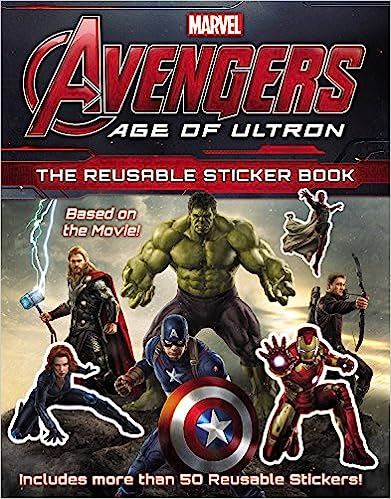

The episode begins with Ben taking a swim in a lake at night. Gwen isn't as eager to get dirty water all over her. Ben teases her but is suddenly pulled under when she turns away. As Gwen checks back, a giant monster emerges from the lake and scares her. She drops her flashlight, revealing it's actually just Ben pranking her as Four Arms. As Gwen storms off, a tentacle of an actual monster pulls Four Arms under the lake. Four Arms manages to escape and makes it back to the Rust Bucket in a sweat, though Gwen and Max obviously don't believe him and tell him to cut the act.

Avengers: Age of Ultron is a 2015 American superhero film based on the Marvel Comics superhero team the Avengers. Produced by Marvel Studios and distributed by Walt Disney Studios Motion Pictures, it is the sequel to The Avengers (2012) and the 11th film in the Marvel Cinematic Universe (MCU). Written and directed by Joss Whedon, the film features an ensemble cast including Robert Downey Jr., Chris Hemsworth, Mark Ruffalo, Chris Evans, Scarlett Johansson, Jeremy Renner, Don Cheadle, Aaron Taylor-Johnson, Elizabeth Olsen, Paul Bettany, Cobie Smulders, Anthony Mackie, Hayley Atwell, Idris Elba, Linda Cardellini, Stellan Skarsgård, James Spader, and Samuel L. Jackson. In the film, the Avengers fight Ultron (Spader)—an artificial intelligence created by Tony Stark (Downey) and Bruce Banner (Ruffalo) who plans to bring about world peace by causing human extinction.